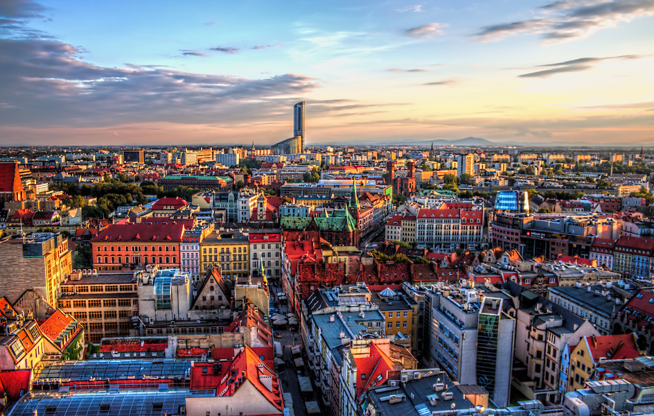

Poznaj Wrocław z innej strony!
Witamy na stronie Wrocławskie Szlaki Odkrywców - interaktywnym przewodniku po jednym z najpiękniejszych miast w Polsce. Wrocław nazywany jest również Miastem stu mostów. Jest to miasto położone nad Odrą, pełne historii, sztuki i zieleni.
Przemierzając Wrocław, można spotkać uśmiechnięte krasnale, odkryć gotyckie katedry, nowoczesne bulwary, a nawet ślady dawnego Breslau. Zapraszamy do odkrywania miasta, które nigdy nie przestaje inspirować!
Podstawowe informacje o Wrocławiu
Poniżej w tabeli zebrano kilka ciekawych statystyk i informacji o mieście.
Tabela zbiorcza
| Typ danych | Wartości główne | Dodatkowe | |||||||||
|---|---|---|---|---|---|---|---|---|---|---|---|
| Opis | Wartość | ||||||||||
| Województwo | Od 1999r. | Dolnośląskie | Stolica województwa | ||||||||
| Liczba ludności | Stan na 2022 (GUS) | ok. 700 tys. | 3. największe miasto w Polsce | ||||||||
| Powierzchnia | Administracyjna pow. | 293 km2 | 7. największe miasto w Polsce | ||||||||
| Mosty | Aktualna liczba | Ponad 120 | Wrocław nazywany jest Wenecją Północy | ||||||||
| Rzeki | Odra i jej dopływy | A także liczne kanały | |||||||||
| Dzielnice |
|
||||||||||
Panorama Wrocławia
Widok na miasto prezentuje się następująco:

Pełna panorama w dużym rozmiarze:
Kontakt
Masz pytania lub chcesz zaproponować nowy szlak?
Napisz do nas:
wroclaw.odkrywcy@example.com
Lub skorzystaj z formularza zgłoszeniowego dla tras:
Zgłaszanie tras